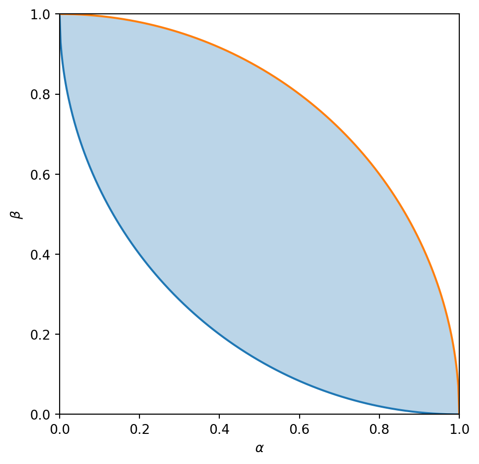

仮説検定
ベイズ推定では推定したいパラメータ \(\theta\in\Theta\) の事前分布 \(\pi(\theta)\) を既知として仮定した。
しかし、現実の問題ではこの事前分布を適切に仮定する方法がない場合もある。
といった問題について事前分布をどのように仮定するのが適切か不明瞭である。
尤度 \(p(x\mid\theta)\) は既知とし、事前分布は既知でないときに データ \(x\in\mathcal{X}\) から パラメータ \(\theta\in\Theta\) を推定する問題を考える。
パラメータの集合を二つの部分集合 \(H_0\) と \(H_1\) に分割する。 つまり、\(H_0\cup H_1 = \Theta\), \(H_0\cap H_1=\varnothing\) である。
そしてパラメータが \(H_0\) に属するか \(H_1\) に属するかを知りたいとする。 この二つの集合 \(H_0\) と \(H_1\) を仮説という。
その二つの仮説のうちの通常成り立っていると考える方を \(H_0\) とし 帰無仮説と呼ぶ。 また、そうでない方を \(H_1\) とし 対立仮説と呼ぶ。
帰無仮説の例として
などがある。 それらに対応する対立仮説はそれぞれ
となる。 仮説検定の考え方では帰無仮説を棄却するかしないかを決める。 帰無仮説を棄却した場合、対立仮説を正しいと考え、帰無仮説を棄却しなかった場合は何も言えないと結論づける。
仮説 \(H_0\) と \(H_1\) がそれぞれ一元集合であるとき、それらを単純仮説という。 \(H_0=\{\theta_0\}\), \(H_1=\{\theta_1\}\) として、 \(p_0(x)\coloneqq p(x\mid \theta_0)\) と \(p_1(x)\coloneqq p(x\mid \theta_1)\) とする。 データから仮説を推定する関数 \(E\colon\mathcal{X}\to[0,1]\) を推定関数という。 各 \(x\in\mathcal{X}\) について、\(E(x)\) は帰無仮説を棄却する確率とする。 この推定関数について二種類の誤り確率を \[\begin{align*} \alpha_E &\coloneqq \expt{E(X)\mid \theta_0}\\ \beta_E &\coloneqq 1-\expt{E(X)\mid \theta_1}\\ \end{align*}\] と定義する。 このとき、\(\alpha_E\) は帰無仮説が正しいときに帰無仮説を棄却する確率であり、第一種誤り確率もしくは有意水準という。 また、\(\beta_E\) は対立仮説が正しいときに帰無仮説を棄却しない確率であり、第二種誤り確率という。 第一種誤り確率だけを小さくしたければ \(E(x) = 0\) とすればよいし、第二種誤り確率だけを小さくしたければ \(E(x)=1\) とすればよい。
Definition 1 (最強力検定) 検定関数 \(E\colon\mathcal{X}\to[0,1]\) が有意水準 \(\alpha\in[0,1]\) の最強力検定 \(\defiff\) \(\alpha_E=\alpha\) であり、任意の \(F\colon\mathcal{X}\to[0,1]\) について、\(\alpha_F\le\alpha\) ならば \(\beta_F\ge\beta\) が成り立つ。
実現可能な誤り確率 \((\alpha,\,\beta)\) の集合 \[\begin{align*} \left\{(\alpha_E,\,\beta_E)\mid E\colon\mathcal{X}\to[0,1]\right\} \end{align*}\] について考える。 この集合は凸集合である。 \[\begin{align*} \alpha_{pE + (1-p)F} &= p\alpha_E + (1-p)\alpha_F,& \beta_{pE + (1-p)F} &= p\beta_E + (1-p)\beta_F \end{align*}\] であることから、 \[\begin{align*} \begin{bmatrix} \alpha_{pE + (1-p)F}& \beta_{pE + (1-p)F} \end{bmatrix} &= p \begin{bmatrix}\alpha_E&\beta_E\end{bmatrix} + (1-p) \begin{bmatrix}\alpha_F&\beta_F\end{bmatrix} \end{align*}\] が確認できる。 また、推定結果を反転させた推定関数 \(1-E(x)\) を考えると、 \[\begin{align*} \begin{bmatrix} \alpha_{1-E}& \beta_{1-E} \end{bmatrix}&= \begin{bmatrix} 1&1 \end{bmatrix} - \begin{bmatrix} \alpha_{E}& \beta_{E} \end{bmatrix} \end{align*}\] である。
凸集合であり、\(\begin{bmatrix}\alpha_E&\beta_E\end{bmatrix}\longmapsto\begin{bmatrix}1&1\end{bmatrix} - \begin{bmatrix}\alpha_E&\beta_E\end{bmatrix}\) に閉じている。
下側の曲線が最強力検定に対応する。
ベイズ推定の枠組みではMAP推定関数が誤り確率を最小化する推定関数であった。 このMAP推定関数は \[\begin{align*} E_\mathrm{MAP}(x) &=\begin{cases} 0&\text{if } \frac{p(x\mid\theta_0)}{p(x\mid\theta_1)}\ge \frac{\pi(\theta_1)}{\pi(\theta_0)}\\ 1&\text{otherwise} \end{cases} \end{align*}\] と表すことができる。
一般的に \(\eta > 0,\,\kappa\in[0,1]\) について \[\begin{align*} E(x) &=\begin{cases} 0&\text{if } \frac{p(x\mid\theta_0)}{p(x\mid\theta_1)}> \eta\\ 1&\text{if } \frac{p(x\mid\theta_0)}{p(x\mid\theta_1)}< \eta\\ \kappa&\text{otherwise} \end{cases} \end{align*}\] という形の推定関数を尤度比検定という。
Lemma 1 (ネイマン・ピアソンの補題) 任意の尤度比検定は最強力検定である(逆も成り立つ)。
Proof. 尤度比検定\(E\)における尤度比の閾値を \(\eta> 0\) とする。 任意の \(F\colon \mathcal{X}\to[0,1]\) について \[\begin{align*} &(F(x) - E(x)) (p_0(x) - \eta p_1(x))\ge 0\qquad\forall x\in\mathcal{X}\\ \iff&F(x)p_0(x) - E(x)p_0(x) - \eta F(x) p_1(x) + \eta E(x) p_1(x)\ge 0\qquad\forall x\in\mathcal{X}\\ \implies&\alpha_F - \alpha_E - \eta (1-\beta_F) + \eta (1-\beta_E)\ge 0\\ \iff&(\alpha_F - \alpha_E) + \eta(\beta_F-\beta_E)\ge 0. \end{align*}\] よって \(\alpha_F\le\alpha_E\) ならば \(\beta_F\ge\beta_E\) である。
データ \(\mathcal{X}\) が連続な場合は確率質量関数の代わりに確率密度関数を考える。
\(\mathcal{X}=\{0,\,1\},\, \Theta=\left\{\theta_0=\frac12,\,\theta_1=\frac13\right\}\) とし、\(k\in\{0,\,1\}\)について \[\begin{align*} p_k(0)&\coloneqq p(0\mid\theta_k) = 1-\theta_k& p_k(1)&\coloneqq p(1\mid\theta_k) = \theta_k \end{align*}\] とする。 このとき、 \(\eta> 0,\,\kappa\in[0,1]\)について、以下の尤度比検定関数 \(E(x)\) で仮説検定することを考える。 \[\begin{align*} E(x)&= \begin{cases} 0&\text{if } \frac{p_0(x)}{p_1(x)} > \eta\\ 1&\text{if } \frac{p_0(x)}{p_1(x)} < \eta\\ \kappa&\text{otherwise.} \end{cases} \end{align*}\] 以下の問に答えよ。